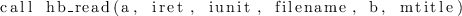

Next: build Builds
Up: Preconditioner routines
Previous: Preconditioner routines
Contents
call prec%init(ptype, info)
- Type:
- Asynchronous.
- On Entry
-
- ptype
- the type of preconditioner.
Scope: global
Type: required
Intent: in.
Specified as: a character string, see usage notes.
- On Exit
- prec
- Scope: local
Type: required
Intent: inout.
Specified as: a preconditioner data structure precdatapsb_prec_type.
- info
- Scope: global
Type: required
Intent: out.
Error code: if no error, 0 is returned.
NotesLegal inputs to this subroutine are interpreted depending on the
 string as follows4:
- NONE
- No preconditioning, i.e. the preconditioner is just a copy
operator.
- DIAG
- Diagonal scaling; each entry of the input vector is
multiplied by the reciprocal of the sum of the absolute values of
the coefficients in the corresponding row of matrix
 ;
;
- BJAC
- Precondition by a factorization of the
block-diagonal of matrix , where block boundaries are determined
by the data allocation boundaries for each process; requires no
communication. Only the incomplete factorization
 is
currently implemented.
is
currently implemented.